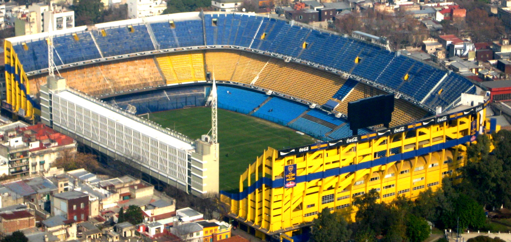

<!DOCTYPE html>
<html>
<head>
    
    <meta http-equiv="content-type" content="text/html; charset=UTF-8" />
    
        <script>
            L_NO_TOUCH = false;
            L_DISABLE_3D = false;
        </script>
    
    <style>html, body {width: 100%;height: 100%;margin: 0;padding: 0;}</style>
    <style>#map {position:absolute;top:0;bottom:0;right:0;left:0;}</style>
    <script src="https://cdn.jsdelivr.net/npm/leaflet@1.6.0/dist/leaflet.js"></script>
    <script src="https://code.jquery.com/jquery-1.12.4.min.js"></script>
    <script src="https://maxcdn.bootstrapcdn.com/bootstrap/3.2.0/js/bootstrap.min.js"></script>
    <script src="https://cdnjs.cloudflare.com/ajax/libs/Leaflet.awesome-markers/2.0.2/leaflet.awesome-markers.js"></script>
    <link rel="stylesheet" href="https://cdn.jsdelivr.net/npm/leaflet@1.6.0/dist/leaflet.css"/>
    <link rel="stylesheet" href="https://maxcdn.bootstrapcdn.com/bootstrap/3.2.0/css/bootstrap.min.css"/>
    <link rel="stylesheet" href="https://maxcdn.bootstrapcdn.com/bootstrap/3.2.0/css/bootstrap-theme.min.css"/>
    <link rel="stylesheet" href="https://maxcdn.bootstrapcdn.com/font-awesome/4.6.3/css/font-awesome.min.css"/>
    <link rel="stylesheet" href="https://cdnjs.cloudflare.com/ajax/libs/Leaflet.awesome-markers/2.0.2/leaflet.awesome-markers.css"/>
    <link rel="stylesheet" href="https://cdn.jsdelivr.net/gh/python-visualization/folium/folium/templates/leaflet.awesome.rotate.min.css"/>
    
            <meta name="viewport" content="width=device-width,
                initial-scale=1.0, maximum-scale=1.0, user-scalable=no" />
            <style>
                #map_a9818e9429c2658e08be17c689583f60 {
                    position: relative;
                    width: 100.0%;
                    height: 100.0%;
                    left: 0.0%;
                    top: 0.0%;
                }
            </style>
        
</head>
<body>
    
    
            <div class="folium-map" id="map_a9818e9429c2658e08be17c689583f60" ></div>
        
</body>
<script>
    
    
            var map_a9818e9429c2658e08be17c689583f60 = L.map(
                "map_a9818e9429c2658e08be17c689583f60",
                {
                    center: [-34.60854928213016, -58.420043778191804],
                    crs: L.CRS.EPSG3857,
                    zoom: 13,
                    zoomControl: true,
                    preferCanvas: false,
                }
            );

            

        
    
            var tile_layer_af5d7fbc1d46e1b096e4f82c21862259 = L.tileLayer(
                "https://{s}.tile.openstreetmap.org/{z}/{x}/{y}.png",
                {"attribution": "Data by \u0026copy; \u003ca href=\"http://openstreetmap.org\"\u003eOpenStreetMap\u003c/a\u003e, under \u003ca href=\"http://www.openstreetmap.org/copyright\"\u003eODbL\u003c/a\u003e.", "detectRetina": false, "maxNativeZoom": 18, "maxZoom": 18, "minZoom": 0, "noWrap": false, "opacity": 1, "subdomains": "abc", "tms": false}
            ).addTo(map_a9818e9429c2658e08be17c689583f60);
        
    
            var circle_6fb9f3ee3cf26b5aee64166c956be60c = L.circle(
                [-34.63561750108096, -58.364769713435194],
                {"bubblingMouseEvents": true, "color": "blue", "dashArray": null, "dashOffset": null, "fill": true, "fillColor": "blue", "fillOpacity": 0.2, "fillRule": "evenodd", "lineCap": "round", "lineJoin": "round", "opacity": 1.0, "radius": 1000, "stroke": true, "weight": 3}
            ).addTo(map_a9818e9429c2658e08be17c689583f60);
        
    
            var circle_ef6e9ed5f927f6fd75b7debc87224004 = L.circle(
                [-34.545272094172674, -58.449752491858995],
                {"bubblingMouseEvents": true, "color": "blue", "dashArray": null, "dashOffset": null, "fill": true, "fillColor": "blue", "fillOpacity": 0.2, "fillRule": "evenodd", "lineCap": "round", "lineJoin": "round", "opacity": 1.0, "radius": 1000, "stroke": true, "weight": 3}
            ).addTo(map_a9818e9429c2658e08be17c689583f60);
        
    
            var marker_e55553d71ef90be7c1006b41c0e3ea18 = L.marker(
                [-34.63561750108096, -58.364769713435194],
                {}
            ).addTo(map_a9818e9429c2658e08be17c689583f60);
        
    
            var icon_2ba86a3ddc1dac7311c170208002e114 = L.AwesomeMarkers.icon(
                {"extraClasses": "fa-rotate-0", "icon": "home", "iconColor": "white", "markerColor": "blue", "prefix": "glyphicon"}
            );
            marker_e55553d71ef90be7c1006b41c0e3ea18.setIcon(icon_2ba86a3ddc1dac7311c170208002e114);
        
    
        var popup_574a9db76dea29284c13a071816b801a = L.popup({"maxWidth": 500});

        
            
                var html_00ff16f855ffc22b586310624c2185f4 = $(`<div id="html_00ff16f855ffc22b586310624c2185f4" style="width: 100.0%; height: 100.0%;"><h1>La bombonera</h1><br/>                     </div>`)[0];
                popup_574a9db76dea29284c13a071816b801a.setContent(html_00ff16f855ffc22b586310624c2185f4);
            
        

        marker_e55553d71ef90be7c1006b41c0e3ea18.bindPopup(popup_574a9db76dea29284c13a071816b801a)
        ;

        
    
    
            var marker_2da6d56ef4b282e09926ed83eacfe858 = L.marker(
                [-34.545272094172674, -58.449752491858995],
                {}
            ).addTo(map_a9818e9429c2658e08be17c689583f60);
        
    
            var icon_6fe8b3df0950888a0a2f89afd6484e85 = L.AwesomeMarkers.icon(
                {"extraClasses": "fa-rotate-0", "icon": "home", "iconColor": "white", "markerColor": "blue", "prefix": "glyphicon"}
            );
            marker_2da6d56ef4b282e09926ed83eacfe858.setIcon(icon_6fe8b3df0950888a0a2f89afd6484e85);
        
    
        var popup_d71e7f7289fff1653534fe4c4e0f8f11 = L.popup({"maxWidth": 500});

        
            
                var html_f48d8505bd17a83d88f0a46d551bee8a = $(`<div id="html_f48d8505bd17a83d88f0a46d551bee8a" style="width: 100.0%; height: 100.0%;"><h1>El monumental</h1><br/>                     </div>`)[0];
                popup_d71e7f7289fff1653534fe4c4e0f8f11.setContent(html_f48d8505bd17a83d88f0a46d551bee8a);
            
        

        marker_2da6d56ef4b282e09926ed83eacfe858.bindPopup(popup_d71e7f7289fff1653534fe4c4e0f8f11)
        ;

        
    
    
            var marker_e6f6210ba1bf3481ca84d9dbd356ce5d = L.marker(
                [-34.60915405648046, -58.39196523234133],
                {}
            ).addTo(map_a9818e9429c2658e08be17c689583f60);
        
    
            var icon_016f2c2922d82c1d81a2f2765fac84b9 = L.AwesomeMarkers.icon(
                {"extraClasses": "fa-rotate-0", "icon": "pushpin", "iconColor": "white", "markerColor": "green", "prefix": "glyphicon"}
            );
            marker_e6f6210ba1bf3481ca84d9dbd356ce5d.setIcon(icon_016f2c2922d82c1d81a2f2765fac84b9);
        
    
        var popup_5742fc938595afde74a42fabd1f51a37 = L.popup({"maxWidth": "100%"});

        
            
                var html_a80f982fcb7438fcabb73e2d125bed6d = $(`<div id="html_a80f982fcb7438fcabb73e2d125bed6d" style="width: 100.0%; height: 100.0%;"><h1>Callao y Rivadavia</h1><br/></div>`)[0];
                popup_5742fc938595afde74a42fabd1f51a37.setContent(html_a80f982fcb7438fcabb73e2d125bed6d);
            
        

        marker_e6f6210ba1bf3481ca84d9dbd356ce5d.bindPopup(popup_5742fc938595afde74a42fabd1f51a37)
        ;

        
    
    
            var marker_d7dd40c2402d870e89de0475c26dda81 = L.marker(
                [-34.59964035141302, -58.392944435644694],
                {}
            ).addTo(map_a9818e9429c2658e08be17c689583f60);
        
    
            var icon_052b117bd11ea03f07bf62c172f56963 = L.AwesomeMarkers.icon(
                {"extraClasses": "fa-rotate-0", "icon": "pushpin", "iconColor": "white", "markerColor": "green", "prefix": "glyphicon"}
            );
            marker_d7dd40c2402d870e89de0475c26dda81.setIcon(icon_052b117bd11ea03f07bf62c172f56963);
        
    
        var popup_8313131f58f2e11e82f840f011d44f56 = L.popup({"maxWidth": "100%"});

        
            
                var html_678efafa158496aad6611377d72d78f7 = $(`<div id="html_678efafa158496aad6611377d72d78f7" style="width: 100.0%; height: 100.0%;"><h1>Callao y Cordoba</h1><br/></div>`)[0];
                popup_8313131f58f2e11e82f840f011d44f56.setContent(html_678efafa158496aad6611377d72d78f7);
            
        

        marker_d7dd40c2402d870e89de0475c26dda81.bindPopup(popup_8313131f58f2e11e82f840f011d44f56)
        ;

        
    
    
            var marker_faeeabb974246a632365d07c9048a726 = L.marker(
                [-34.607710627889254, -58.370401504661324],
                {}
            ).addTo(map_a9818e9429c2658e08be17c689583f60);
        
    
            var icon_e9852a51b148b5d83534a35d76cff6f4 = L.AwesomeMarkers.icon(
                {"extraClasses": "fa-rotate-0", "icon": "pushpin", "iconColor": "white", "markerColor": "green", "prefix": "glyphicon"}
            );
            marker_faeeabb974246a632365d07c9048a726.setIcon(icon_e9852a51b148b5d83534a35d76cff6f4);
        
    
        var popup_1a20306d1185461f9de93aad9144e51a = L.popup({"maxWidth": "100%"});

        
            
                var html_336429989673b6887624085d27069812 = $(`<div id="html_336429989673b6887624085d27069812" style="width: 100.0%; height: 100.0%;"><h1>Alem y Rivadavia</h1><br/></div>`)[0];
                popup_1a20306d1185461f9de93aad9144e51a.setContent(html_336429989673b6887624085d27069812);
            
        

        marker_faeeabb974246a632365d07c9048a726.bindPopup(popup_1a20306d1185461f9de93aad9144e51a)
        ;

        
    
    
            var marker_375eea119c135bffc41b023a5381080e = L.marker(
                [-34.59836493767683, -58.370976016505566],
                {}
            ).addTo(map_a9818e9429c2658e08be17c689583f60);
        
    
            var icon_d8bcef6b0e589635fdc8ea845bf76d65 = L.AwesomeMarkers.icon(
                {"extraClasses": "fa-rotate-0", "icon": "pushpin", "iconColor": "white", "markerColor": "green", "prefix": "glyphicon"}
            );
            marker_375eea119c135bffc41b023a5381080e.setIcon(icon_d8bcef6b0e589635fdc8ea845bf76d65);
        
    
        var popup_e5d42c3a8260afeae182df5c63d5b0ab = L.popup({"maxWidth": "100%"});

        
            
                var html_fbff28375e38cbcbddac84b8435bb40b = $(`<div id="html_fbff28375e38cbcbddac84b8435bb40b" style="width: 100.0%; height: 100.0%;"><h1>Alem y Cordoba</h1><br/></div>`)[0];
                popup_e5d42c3a8260afeae182df5c63d5b0ab.setContent(html_fbff28375e38cbcbddac84b8435bb40b);
            
        

        marker_375eea119c135bffc41b023a5381080e.bindPopup(popup_e5d42c3a8260afeae182df5c63d5b0ab)
        ;

        
    
    
            var marker_8900bc66771605069b12222dab0e47b4 = L.marker(
                [-34.60854928213016, -58.420043778191804],
                {}
            ).addTo(map_a9818e9429c2658e08be17c689583f60);
        
    
            var icon_5613ac22d423feaa7192e37bc21aabc1 = L.AwesomeMarkers.icon(
                {"extraClasses": "fa-rotate-0", "icon": "exclamation-sign", "iconColor": "white", "markerColor": "red", "prefix": "glyphicon"}
            );
            marker_8900bc66771605069b12222dab0e47b4.setIcon(icon_5613ac22d423feaa7192e37bc21aabc1);
        
</script>
</html>